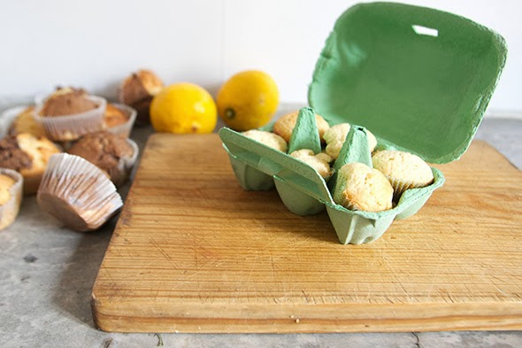
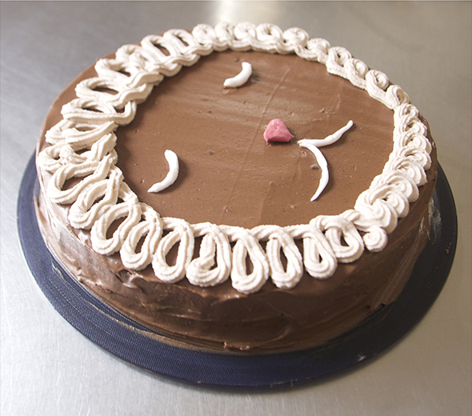
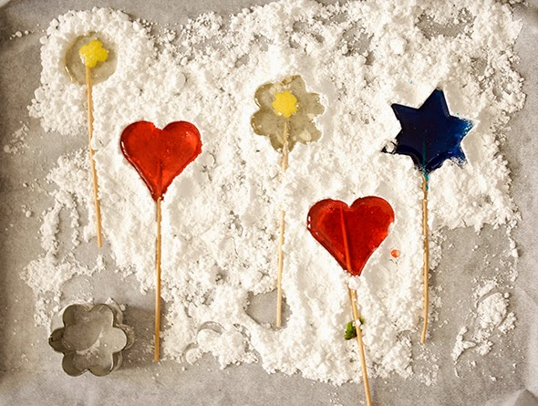
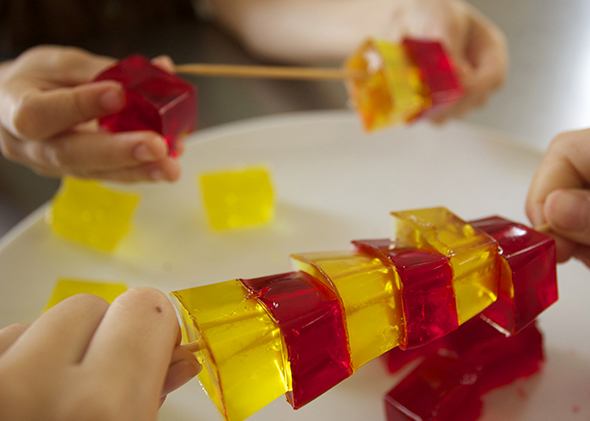

Mira, con que nos ha endulzado nuestra vecina Josefa el fin de semana. Riquísimo!!

Mira, con que nos ha endulzado nuestra vecina Josefa el fin de semana. Riquísimo!!


Intentábamos hacer una tarta de cordero marrón, lo hemos visto de handmade by Charlotte ... pero nos ha salido un león.
Leer más →
Hacer tus propios piruletas Usa formas de galletas y alrededor presiona azúcar en polvo. Quita con cuidado los moldes. En una sartén antiadherente calienta el azúcar…
Leer más →

Esto consigues dejando enfriar la gelantia en moldes para cubitos de hielo. Hannah y Noah se han esforzado para construir ... bastante difícil. También se pueden…
Leer más →
Conozco unos niños que prefieren la mitad de una manzana con gusano que uno sin!
Leer más →